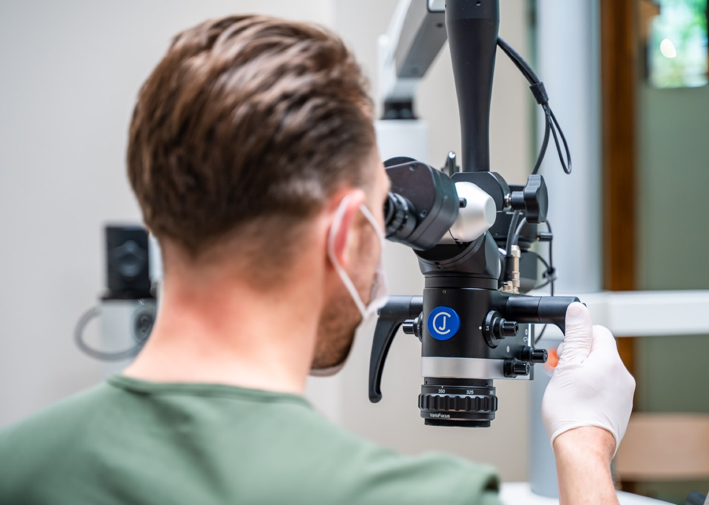
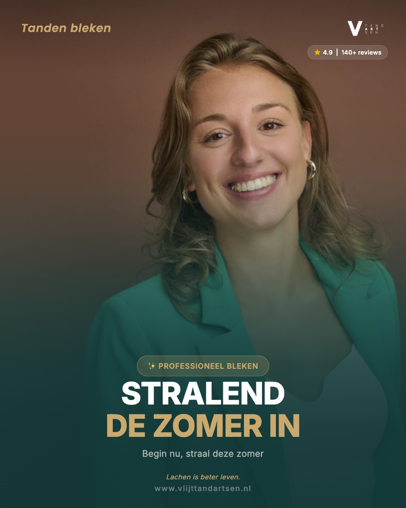
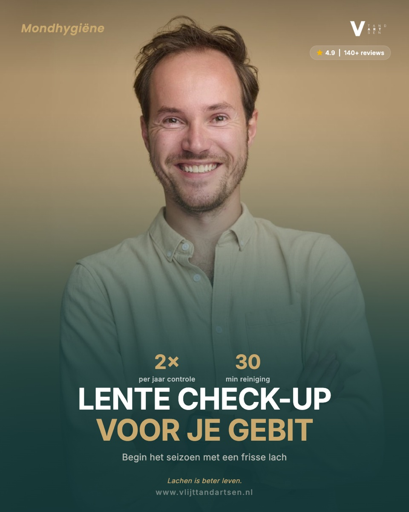
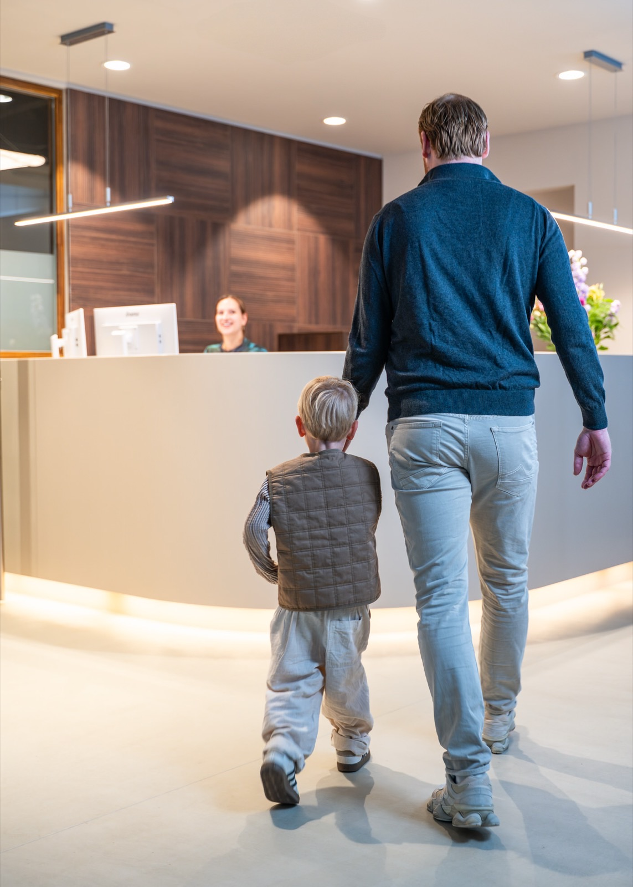
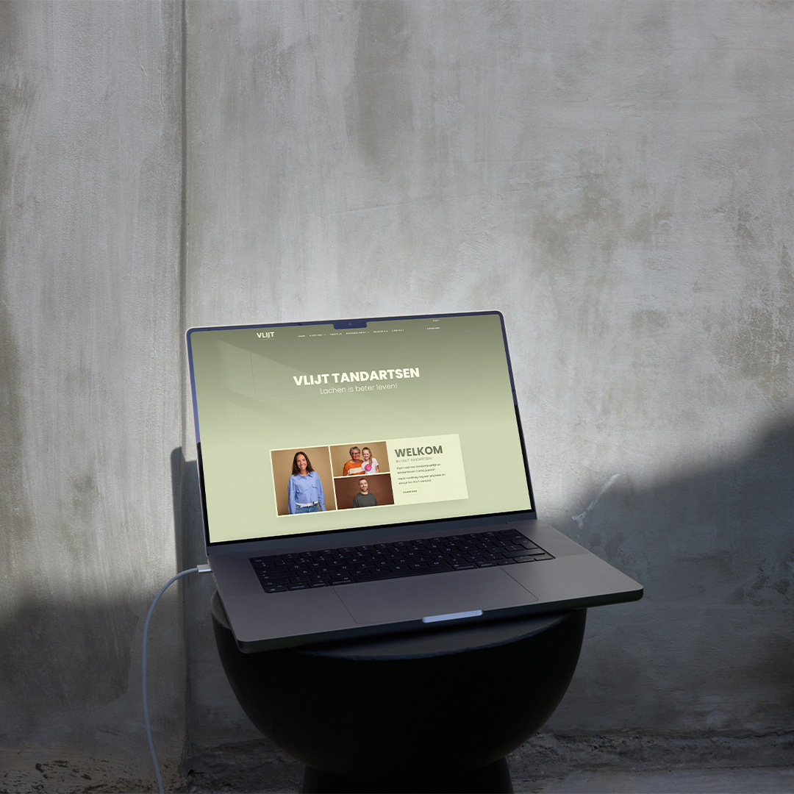
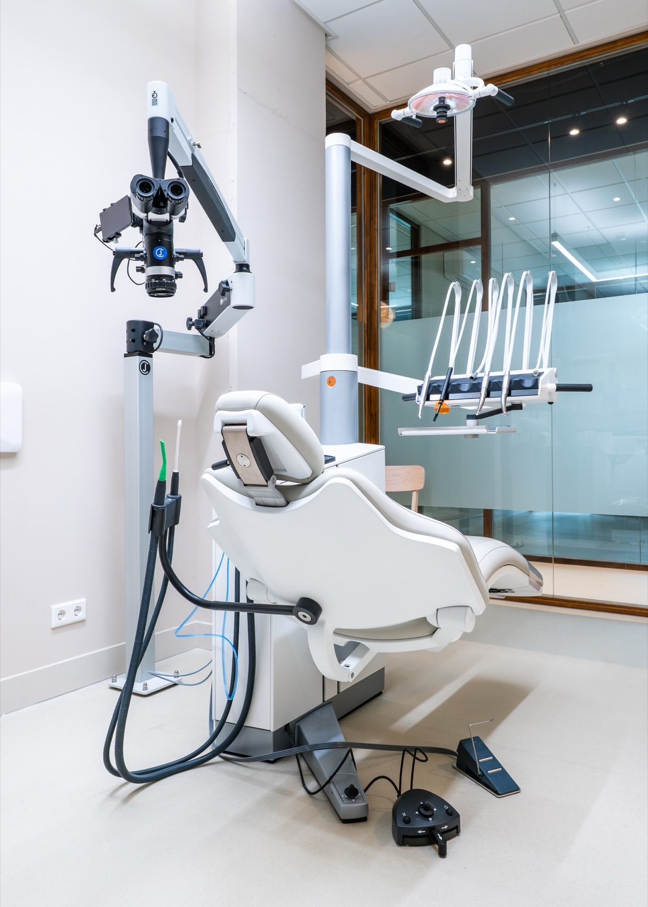
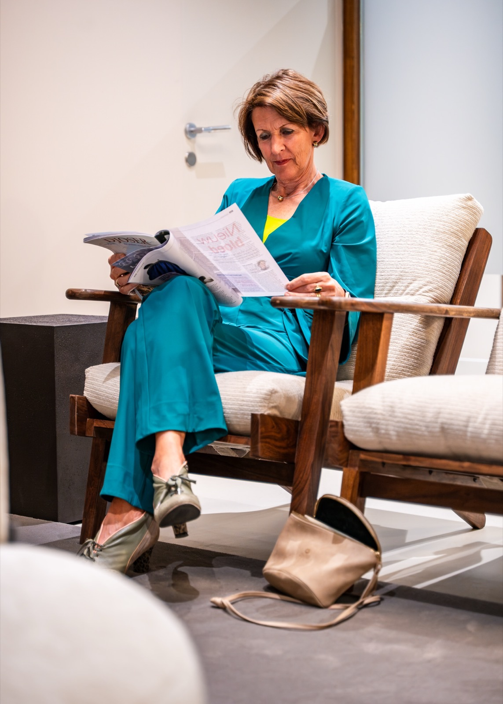
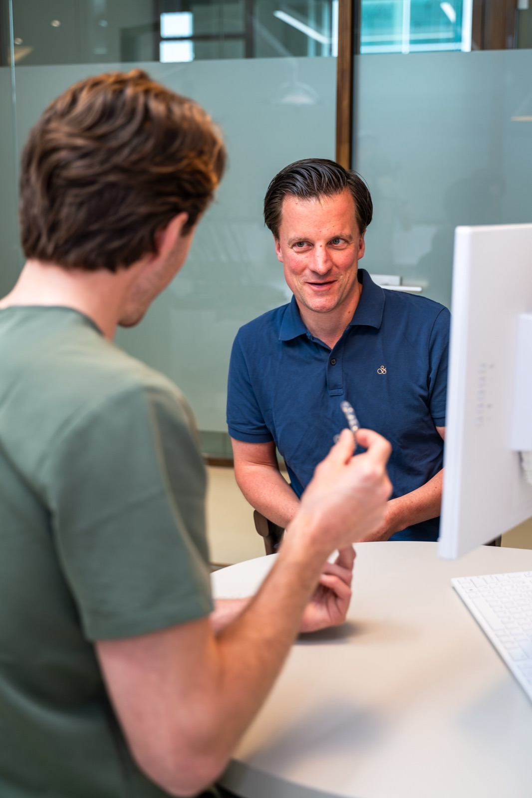
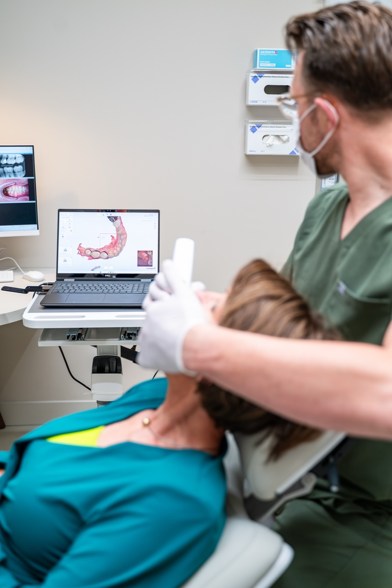
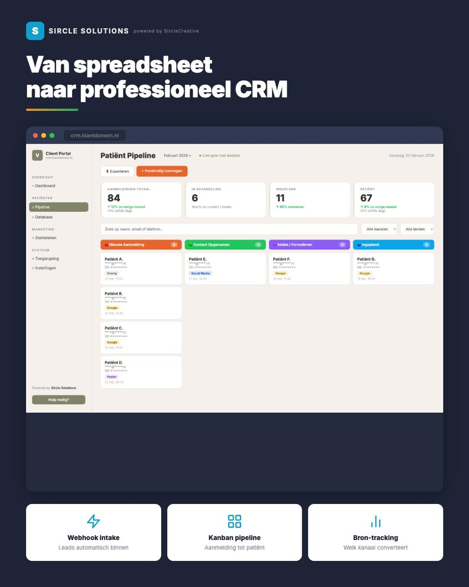

Drie tandartsen kwamen voor een naam. Het werd Vlijt — een volledige merkstrategie en complete digitale basis: visuele identiteit, website, eigen fotografie en video, drukwerk en groei via Google, Meta en lokale SEO.









Educatie & Vertrouwen via Video
Naast de website draaien we een maandelijkse video-productie voor het YouTube-kanaal van VLIJT. Van praktijktours en team-introducties tot educatieve content over preventie en mondhygiëne — content die patiënten al kennen voordat ze de stoel raken.
Voorkomen is rustig slapen — Preventie
Je Mond Vertelt een Verhaal — Mondhygiëne
Maatwerk CRM voor data-gedreven groei
Standaard software paste niet — te complex, te duur, niet ontworpen voor de workflow van een tandartspraktijk. Daarom bouwden we in drie weken een maatwerk CRM-portal. Excel-sheets en Google Spreadsheets eruit, real-time inzicht erin.
- Live sales pipeline — van eerste aanvraag tot ingeschreven patiënt
- Postcode heatmap met klantlocaties in Eindhoven en omgeving
- Source-tracking per marketingkanaal (Google Ads, SEO, social, mond-tot-mond)
- AVG-conform vanaf dag één, met heldere autorisaties per teamlid


Resultaten
"Toen we met drie tandartsen onze eigen praktijk begonnen, hadden we alles tegelijk nodig: naam, merk, website, fotografie, drukwerk én een online groei-aanpak. Sircle heeft dat van A tot Z geleverd — en bleef ook na livegang betrokken. Wat het verschil maakt: ze denken strategisch mee, ze leveren snel, en ze blijven optimaliseren. Het resultaat? Een volle praktijk en een merk waar we trots op zijn. Geen leverancier, maar een echte partner."— De tandartsen van VLIJT
Creative director: Sebastiaan Vreeken · Merk strategie: Aris Thijssen